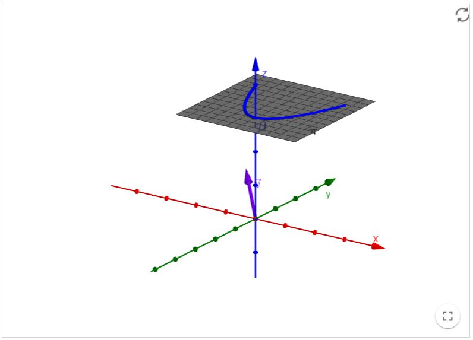
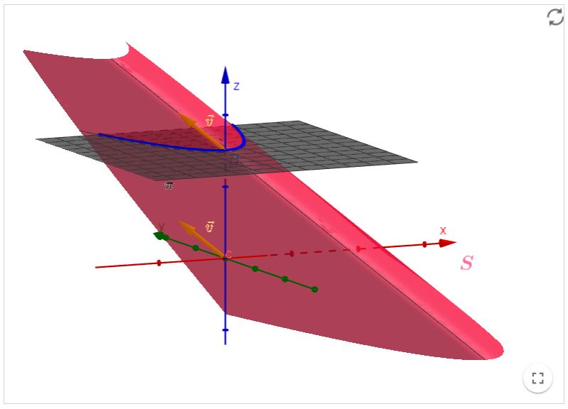

Revisão de Geometria Analítica
Parametrizações
Parametrização de uma superfície cilíndrica
Uma superfície Cilíndrica é um corpo ou superfície formado por um conjunto de retas paralelas, estas geradas por um ponto pertencente a uma curva
$\beta$ em um plano $\pi$ e um vetor diretor $\vec{v}$ que não está contido no plano $\pi$. A curva é denominada diretriz, enquanto as retas são chamadas
de geratrizes. Ou seja, podemos definir uma superfície cilíndrica $S$ de diretriz $\beta$ e geratrizes paralelas ao vetor $\vec{v}$ como o seguinte conjunto:
$\mathrm{S}:\{P+t \vec{v} \mid P \in \beta, t \in \mathbb{R}\}$
No recurso computacional, apresentamos nos applets uma curva diretriz, um vetor paralelo as geratrizes e a superfície cilíndrica gerada.
Recursos computacionais
Parametrização de uma superfície cilíndrica I
Livro Geogebra

Parametrização de uma superfície cilíndrica II
Livro Geogebra
